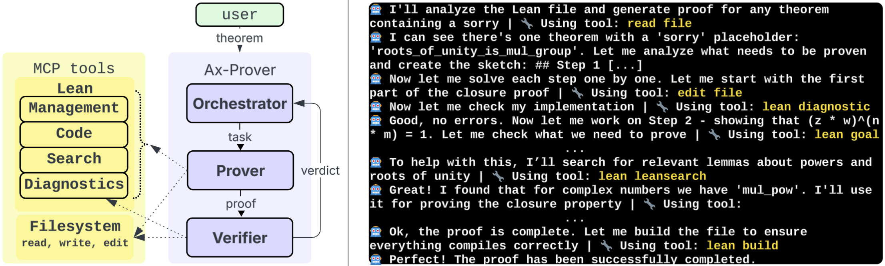

Ax-Prover: A Deep Reasoning Agentic Framework for Theorem Proving in Mathematics and Quantum Physics
Benjamin Breen, Marco Del Tredici, Jacob McCarran, Javier Aspuru Mijares, Weichen Winston Yin, Kfir Sulimany, Jacob M. Taylor, Frank H. L. Koppens, Dirk Englund
Ax-Prover is a multi-agent system proving theorems in Lean via LLMs equipped with Lean tools over MCP.
Abstract
We present Ax-Prover, a multi-agent system for automated theorem proving in Lean that can solve problems across diverse scientific domains and operate either autonomously or collaboratively with human experts. To achieve this, Ax-Prover approaches scientific problem solving through formal proof generation, a process that demands both creative reasoning and strict syntactic rigor. Ax-Prover meets this challenge by equipping Large Language Models (LLMs), which provide knowledge and reasoning, with Lean tools via the Model Context Protocol (MCP), which ensure formal correctness. To evaluate its performance as an autonomous prover, we benchmark our approach against frontier LLMs and specialized prover models on two public math benchmarks and on two Lean benchmarks we introduce in the fields of abstract algebra and quantum theory. On public datasets, Ax-Prover is competitive with state-of-the-art provers, while it largely outperforms them on the new benchmarks. This shows that, unlike specialized systems that struggle to generalize, our tool-based agentic theorem prover approach offers a generalizable methodology for formal verification across diverse scientific domains. Furthermore, we demonstrate Ax-Prover's assistant capabilities in a practical use case, showing how it enabled an expert mathematician to formalize the proof of a complex cryptography theorem.
Problem
Specialized theorem provers trained on specific domains struggle to generalize across diverse scientific fields. Automated theorem proving typically requires both creative reasoning and strict syntactic rigor, and existing systems do not readily support human-AI collaboration.
Approach
Ax-Prover is a multi-agent system for theorem proving in Lean that equips LLMs with Lean tools via the Model Context Protocol (MCP). The system can operate autonomously or collaboratively with human experts. It includes a multi-agent workflow with specialized roles and tool-enhanced reasoning for formal correctness checking.

Figure 1 : Left: the multi-agent workflow of Ax-Prover. Right: the tool-enhanced reasoning of the Prover.
Results
On public math benchmarks, Ax-Prover is competitive with state-of-the-art provers. On new benchmarks in abstract algebra and quantum theory, it largely outperforms specialized prover models. A practical use case demonstrates how Ax-Prover helped an expert mathematician formalize a complex cryptography theorem. Achieves 54.7% pass@1 on PutnamBench.